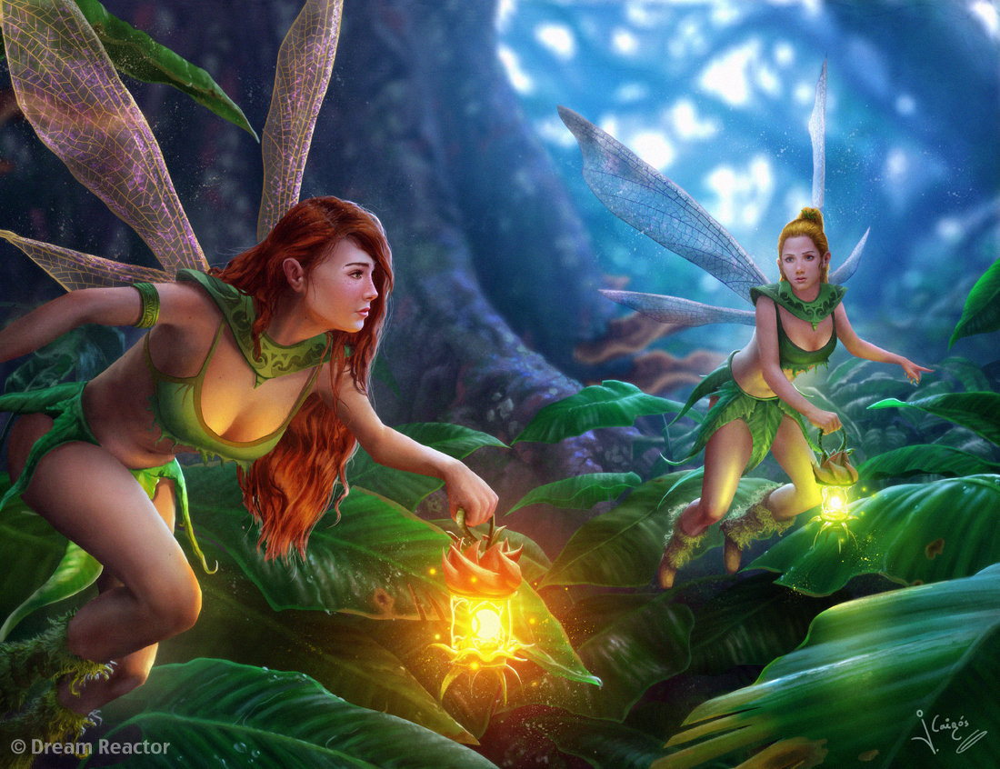

Były niewielkiego wzrostu. Miały liczyć sobie niecałe cztery stopy. Te rozmiary wynagradzała im uroda. Wróżki rozpoznawano po rudych i długich włosach. Niektóre miały mieć także zieloną cerę, która jednak tylko dodawała im uroku. Jako nieśmiertelne były też wiecznie młode, chociaż zdarzały się nieliczne wyjątki.
Wraz z elfami zamieszkiwały w świecie duchów, zmarłych i wielu innych istot nadprzyrodzonych, w której czas płynął zupełnie inaczej niż w świecie ludzi. Był to świat wolny od bólu i cierpienia. Miała się ona znajdować pod kurhanami. Panowało też przekonanie, że miejsca nocnych zabaw wróżek otaczała charakterystyczna, niebieska poświata. Chociaż świat, w którym zamieszkiwały wróżki, był otwarty dla niektórych śmiertelników, należało przestrzegać określonych zasad. Przed wejściem należało przyjąć żelazne narzędzie, zazwyczaj nóż, by powrócić do żywych nie wolno było tknąć miejscowego jedzenia. A na człowieka, który ważył się wynieść przedmiot z tego świata miał spaść nie tylko gniew jej mieszkańców, ale już nigdy nie było mu dane tam powrócić.

Wróżki przewidywały przyszłość. Przejawiały słabość z jednej strony do muzyki, z drugiej do wystawnych uczt, podczas których miały tańczyć i raczyć się dużą ilością alkoholu. Wróżki kierowały się swoimi własnymi normami, które daleko odbiegały od tych znanych śmiertelnikom. Potrafiły być życzliwe dla ludzi i nawet zapraszać ich do swojego świata. Z drugiej strony były bardzo wrażliwe i trzeba było uważać, żeby ich nie urazić. Na gniew wróżek można się było także narazić, roznosząc fałszywe plotki na ich temat. Nie tylko gestem uprzejmości, ale wręcz obowiązkiem śmiertelnika, który został zaproszony do świata wróżek, było podzielenie się z jej mieszkańcami trunkiem, który przyniósł ze sobą.